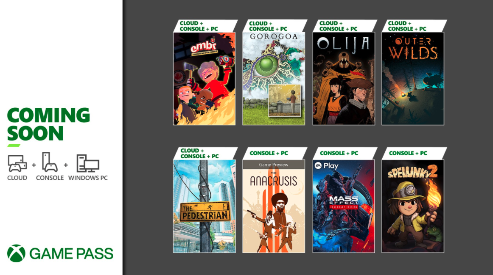

GamePass - Enero 2022 | Noticia
Anunciados los primeros juegos para GamePass del año
Empieza el 2022 y Gamepass ya nos dejó su primera tanda de incorporaciones, apoyándose fuertemente en la integración con EA Play. Mirá el listado completo:
- Embr (Consola y PC), 6 de enero
- Mass Effect Legendary Edition (Consola y PC), 6 de enero
- Outer Wilds (Consola y PC), 6 de enero
- The Anacrusis (Game Preview) (Consola y PC), 13 de enero
- Spelunky 2 (Consola y PC), 13 de enero
¿Estabas esperando alguno de estos títulos?